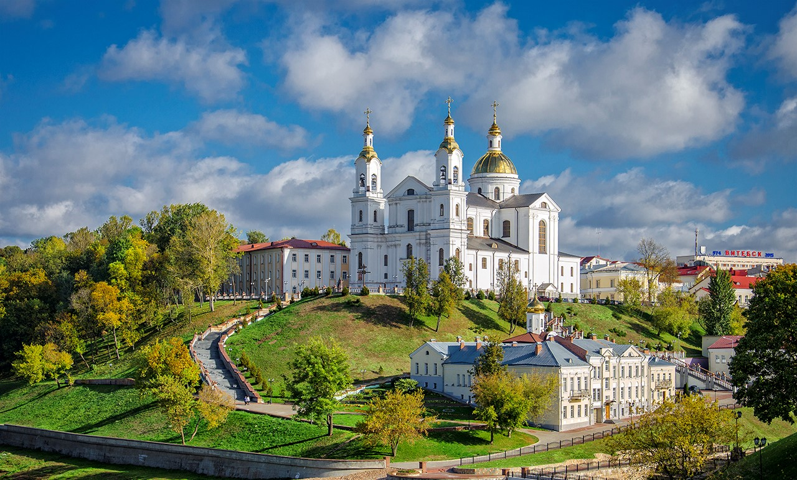
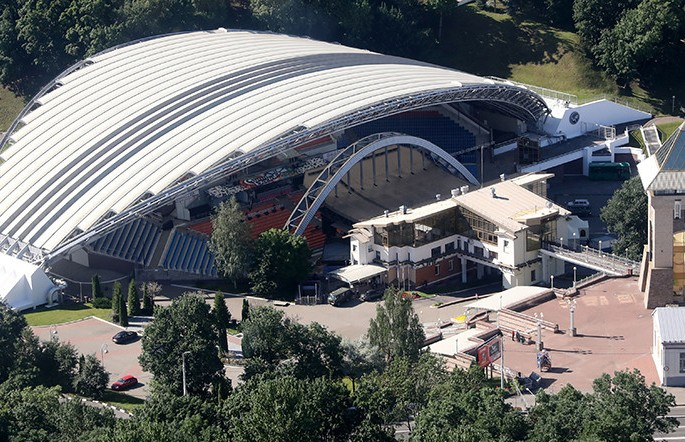
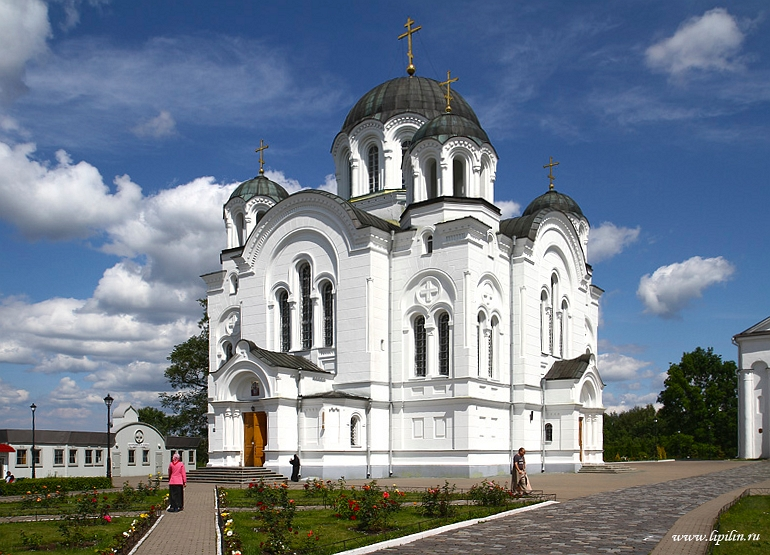

Художественная галерея

Софийский Собор

Памятник буквее "Ў"
Свято-Успенский кафедральный собор
Летний Амфетиатр
Спасо-Евфросиниевский монастырь
|
Художественная галерея |
Софийский Собор |
Памятник буквее "Ў" |
|

Свято-Успенский кафедральный собор |

Летний Амфетиатр |

Спасо-Евфросиниевский монастырь |